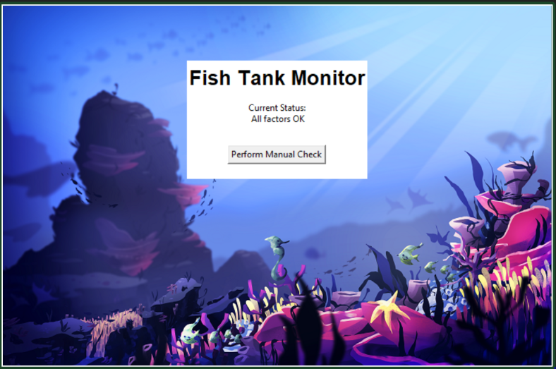

HomePage
Portfolio
About Me
My Portfolio
Chicken and the eggg

In our program, we use numerous pictures that we have set to become turtles, such as the nest, and the chicken. The chicken asks the user how many eggs to lay, and what color each egg should be, and lays them into the nest below it. The color of the eggs are stored in a list variable. The eggs randomly have a chance of staying as eggs, turning into omelets, or becoming chicks. It goes as follows: 50% chance of staying as an egg, 25% chance of becoming an omelete, and another 25% chance of being born as a chick.
Indiana Banana

This program uses the turtle module to create a platforming game, that revolves around a minion trying to obtain the sacred golden Banana from an ancient dungeon. The minion needs to dodge spikes, rolling boulders, and other obstacles to get to the end of the course. Information of each level is stored in a list variable, and the minion avatar is a turtle that changes its state when moving and teleports back to the start of the screen when it comes in contact with an enemy or obstacle.
Dino e-card

We have made an e-card for a children's hospital, which allows the user to play a maze game within it and tells the user a funny and endearing joke. It is dino-themed. The baby turtle inside the maze needs to find its way out, and crawl towards its mother (the dinosaur on the left). When the baby turtle crosses a certain threshold, it disappears, and a message is shown which says "Child reunited!"
A pHishy Fish Tank

We fixed a faulty update to a fishtank's software system, as it had key parts of its code missing, stored in encrypted forms in files all over the computer. Initially, we suspected that an attacker had breached the security o the software, but through further investigation, we realized that the software update itself was faulty, and it needed to be fixed and debugged manually. We also looked through records of email logs just to see if any unknown external threats had been detected.
Berry Samurai scratch game
We have created the game known as Berry Samurai, which involves clicking all the berries that fly around on the screen to rack up points. However, if anyone clicks the pineapple, the game shall end (as pineapples are not berries). On the other hand, if somebody does not click any pineapples throughout the time limit, they win the game, and their final score is shown. The game asks for repetition and practice, allowing for more playtime as it is needed for mastery.
Command line GUI